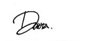

Greetings!
My relationship with tarot has always been like an on-off button since I was small.
Numberous events had drifted me away from my cards yet vice versa, many pulled me back,
and reading for people is just one of the magnetic force! I realized that my journey will only be
completed by intertwining with yours!
And I hope you do too ♡
I grew up under the warm Jakarta weather, but collected bits of glints from around the world with my point-to-shoot.
Finishing uni in the breezy city, Bandung, I caught myself being deeply in love with my surroundings and find peace in taking pictures.
I do portrait, themed, event, and bits of urban.
If would like to book a tarot reading, or a photo-session please do reach for me via booking link!
Blessings,
